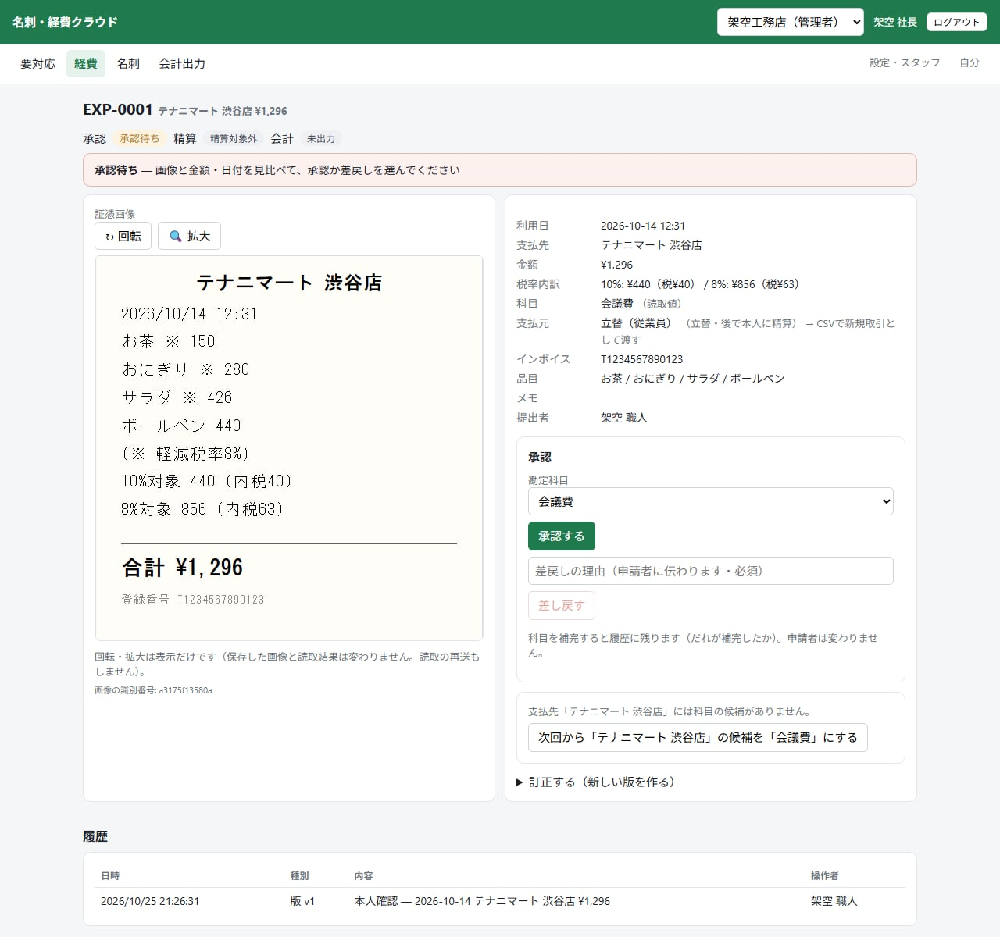
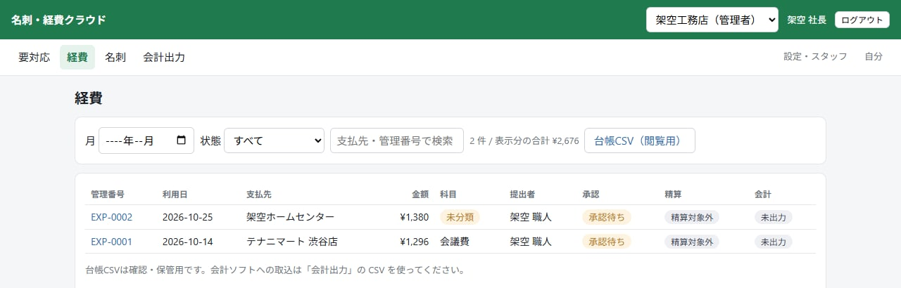
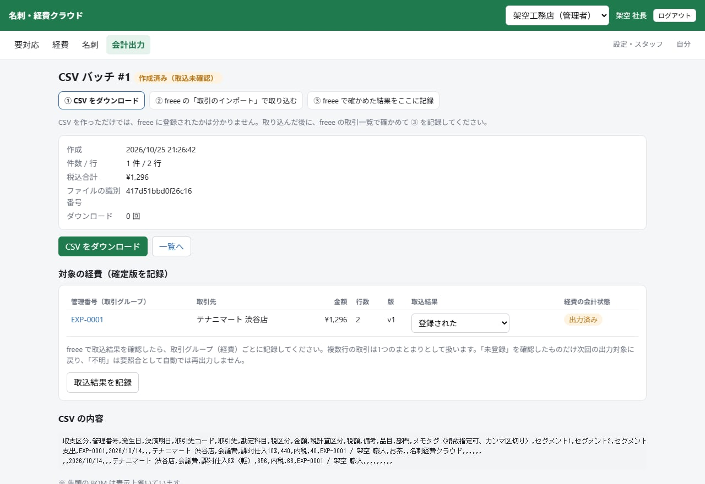
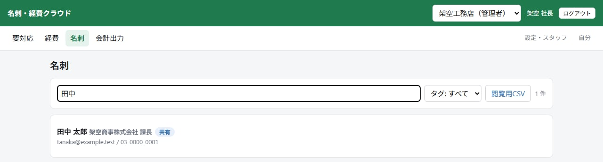

レシートを手で打ち込んでいる
現場で払ったレシートが財布や車にたまり、月末にまとめて日付・金額・支払先を打ち込んでいる。
経費精算・名刺管理 × LINE
現場で立て替えたレシートも、月末の打ち込みも、たまった名刺も。
現場の人はいつものLINE、事務担当はスマホかパソコンの画面で片づける、経費精算と名刺管理のシステムです。
PROBLEM
現場で払ったお金の記録は、どうしても後回しになります。たまった分は、月末に事務所でまとめて片づけることに。
現場で払ったレシートが財布や車にたまり、月末にまとめて日付・金額・支払先を打ち込んでいる。
職人さんが立て替えた分を、もう払ったのか、まだなのか。確かめるのに手間がかかる。
会計ソフトに入れるために、科目や税率を、あとから1件ずつ付け直している。
名刺が手元にたまり、「あの会社の担当の人、誰だったか」というときに見つからない。
HOW IT WORKS
現場の人がやることは、LINEでレシートの写真を送って、届いたカードを確かめることだけ。承認と会計への引き渡しは、事務担当がまとめて行います。
会社のLINE公式アカウントに、レシートの写真を送ります。何枚続けて送っても大丈夫です。
現場の人
AIが読み取った金額・日付・支払先・税率ごとの内訳が、カードで届きます。レシートと見比べて、違うところはボタンで直して申請します。
現場の人
事務担当はスマホかパソコンで、画像と見比べて承認か差戻し。立替の精算を記録し、月に1回、freee向けの取込ファイルを作ります。
社長・事務担当
名刺も同じLINEで。「名刺」と送ってから写真を送ると、名刺として登録できます。
LINE DEMO
製品が実際に返す文言をもとに、トークの流れを再現しました。下のボタンを押すと、メッセージが送られます。
実際の文言をもとにした再現イメージです。LINEアプリの実際の見た目とは異なります。店名・金額・番号は架空です。
FOR OFFICE
社長・事務担当の画面は、スマホでもパソコンでも使えます。ログインはメールに届く6桁の番号で、パスワードはいりません。
承認待ち、科目の補完待ち、差戻し、未精算、会計出力できるもの。いま手を付けるべきものが、開いた瞬間に分かります。

画面の一番上に「次にすること」が1行で出ます。画像と金額・日付を見比べて「承認する」。違っていれば、理由を書いて「差し戻す」と、申請した人のLINEに理由が届きます。
「精算を記録」は払ったことの記録です。この画面から送金はしません。

月や状態で絞り込めます。「未精算」で絞れば払い忘れが、「訂正が必要」で絞れば残りの作業が見つかります。スタッフが見られるのは自分の経費だけです。

画面はすべて、架空の会社・架空のデータで撮影したものです。
RECORD
経費は、お金の記録です。あとから「これ、誰が直した？」とならないように、作りから気を配っています。
AIが読み取った値と、人が直した値を区別して記録します。事務担当の画面にも「手で直した項目」が出ます。
直すたびに新しい版ができ、前の内容・直した理由・直した人が履歴に残ります。
チーム利用では、社長の経費は別の管理者が承認する設定が、最初から入っています。
一度会計用ファイルに出した経費は、次のファイルに自動では入りません。
ACCOUNTING
承認済みの経費を、freeeの「取引のインポート」の形のファイル(CSV)にまとめます。科目と税率の組み合わせから、freeeの勘定科目・税区分を付けて出力します。
「会計出力」で、出力できる経費を選んで「CSVバッチを作成」。ファイルをダウンロードします。
freeeの「取引のインポート」で、そのファイルを取り込みます。
freeeの取引一覧で確かめて、経費ごとに「登録された」などを記録。作業が終わった経費には「✅ 完了」が付きます。

発生日・取引先・勘定科目・税区分・税込金額・税額・備考(管理番号と申請者)・品目など。8%と10%が混ざったレシートは、1つの取引の2行として出力します。
小口現金や事業主の私費などは「決済済み」、従業員の立替は「未決済」の取引として出力します。会社カードや口座振込は、会社ごとに渡し方を決めてから出力します。
freeeへ自動で登録するものではありません。取込用のファイルを作るところまでです。会計用のファイルは、freeeの取引インポートの形だけに対応しています。
BUSINESS CARD
LINEで「名刺」と送ってから写真を送ると、名刺として読み取ります。内容を確かめて「✅ この内容で登録」を押すだけ。
登録した名刺は、最初は登録した本人と管理者だけが見られます。

STYLE
使い方は2つ。会社ごとに選べます。
一人親方・個人事業など、承認する人がいない場合
スタッフが申請して、社長・事務担当が承認する会社
どちらでも使えるもの：精算の記録、freee向けの会計出力、名刺、記録の持ち出し
BEFORE / AFTER
紙のレシートを月末に集めて手で打ち込むやり方と比べました。できないことも、正直にお伝えします。
SCOPE
日付・時刻・支払先・合計・消費税・10%対象の額と税・8%対象の額と税・インボイスの登録番号・品目(5つまで)
読めない・写っていない項目は、推測で埋めずに空のままにします。勘定科目は読み取りません(会社の設定の候補か、事務担当が入れます)。
会社名・部署・役職・氏名・フリガナ・メール・電話・携帯・FAX・郵便番号・住所・URL
| もの | 対応 |
|---|---|
| 印字されたレシート | 対応 |
| 8%と10%が混ざったレシート | 対応税率ごとの額と税を読み取り |
| インボイスの登録番号 | 対応「T」と13桁が読めたときだけ |
| 画像の形式 | 対応JPEG・PNG、10MBまで |
| 読み取れなかったとき | 対応LINEの4つの質問に答えて手入力 |
| PDFの領収書 | 非対応写真かスクリーンショットで送ってください |
| 1枚の写真に複数のレシート | 非対応1枚ずつ撮って送ってください |
| 名刺の裏面 | 非対応表と裏をまとめる機能はありません |
SECURITY
読み取りのときに送るのは、レシートか名刺の画像1枚と、読み取りの指示だけ。会社名・利用者の名前・ほかの経費は送りません。送り先はOpenAIで、応答を保存しない設定で送ります。
ほかの会社からは見えない作りです。会社の中でも、スタッフが見られるのは自分の経費と、自分が登録したか共有された名刺だけ。お客さまのデータでAIの学習はしません。
LINEから利用を申請した人は、管理者が承認するまで使えません。辞めた人は「停止」すれば、LINEもWebも使えなくなります(記録は残ります)。
経費の記録(直した履歴・承認・精算を含む)、会計用ファイル、名刺、画像を、1つのZIPファイルで取り出せます。
FLOW
会社の登録やLINEの設定は、担当者がご案内しながら進めます。
いまの経費の流れを伺い、ひとり利用かチーム利用か、法人か個人事業かを確認します。
会社ごとに1つ、LINE公式アカウントを作っていただきます。作り方と設定はご案内します。
会社を登録し、責任者の方に招待のリンクをお渡しします。
承認の方式、支払元と会計への渡し方、科目とfreeeの勘定科目・税区分の対応を決めます。画面の手順に沿って進められます。
スタッフは会社のLINEを友だち追加し、「利用を申請する」から名前を送るだけ。責任者が承認します。
1〜2件のレシートで、確認・承認・精算・会計出力まで通します。freeeには少ない件数で取り込んで確かめます。
料金・導入の進め方は、ご相談のうえご案内します。
FAQ
いりません。会社のLINE公式アカウントを友だち追加して、レシートの写真を送るだけです。事務担当・社長はスマホかパソコンのブラウザで確認します。
使えます。「ひとり利用」では、承認する人がいなくても、本人が内容を確かめて登録すれば完了です。スタッフがいる会社は「チーム利用」で、スタッフが申請して社長や事務担当が承認します。
申請の前に、届いたカードをレシートと見比べてもらいます。違うところは「金額」「日付」「支払先」のボタンを押して直せます。読み取れなかったときは、質問に答えるだけで手で登録できます。人が直したところには ✏️ の印が付きます。
LINEの質問に答えるだけで、手入力で登録できます(金額 → 税率 → 日付 → 支払先の順)。
自動では入りません。freeeの「取引のインポート」用のファイルを作るところまでです。そのファイルをfreeeに取り込み、取り込めたことをこの画面に記録してもらいます。同じ経費を二度出力しないように、記録済みのものは分かるようになっています。
会計用のファイルは、freeeの取引インポートの形だけです。経費の一覧(台帳CSV)は取り出せますが、会計ソフトへの取り込み用ではありません。
必要です。会社ごとにLINE公式アカウントを1つ用意していただきます。作り方はご案内します。
LINEの「送信取消」をしてください。申請の前なら、その画像と読み取った内容も消えます。申請の後に取り消した場合は、記録は残し、画像を表示から外します。
管理者が「設定・スタッフ」でその人を「停止」します。停止した人はLINEもWebも使えなくなります。その人が出した経費などの記録は残ります。
チーム利用では、最初の設定で「自分の経費は別の管理者が承認する」になっています。
読み取りのときに、レシートまたは名刺の画像1枚と、読み取りの指示だけを送ります。会社名・利用者の名前・ほかの経費は送りません。送り先はOpenAIで、応答を保存しない設定で送ります。
CONTACT
いまの経費の流れを伺って、ひとり利用かチーム利用か、合う使い方をご提案します。
使える補助金があるかどうかも、あわせてご相談ください。
相談は無料です。「名刺・経費クラウドについて」とひとことお送りください。
メールでのご相談も受け付けています：info@senwa-inc.com